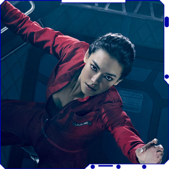

The Expanse (TV series) starts out when the disappearance of a rich-girl-turned-political-activist links the lives of humans across the various factions, most notably the crew of the Rocinante and UN Undersecretary Chrisjen Avasrala. Amidst political tension between Earth, Mars and the Asteroid Belt, these individuals unravel the single greatest conspiracy of all time while navigating through betrayel, subterfuge, outright lies, and more.
Just when you feel things are starting to be under control, the Protomolecule has taken over Eros and threatens the safety of the entire solar system. From there, the larger conspiracy to control the protomolecule is further unraveled, as the crew of the Rocinante, UN Undersecretary Avasarala and Martian Marine Bobbie Draper attempt to prevent system wide war while trying to stop a mysterious new creature. Unfortunately, war seems to be inevitable due mostly to the conspiracy involving the Protomolecule. As the war between Earth and Mars turns deadly in ways the solar system has never seen, a new threat in the outer reaches of the Belt appears to threaten the very future of humanity. With the discovery of the Ring Gate, humanity has found new worlds to explore. The crew of the Rocinante is on a mission to explore these worlds beyond the Ring Gate, the first of which is Ilus. Humanity has been given access to thousands of Earth-like planets which has created a land rush for natural resources and furthered tensions between Earth, Mars and the Belt. Early explorers on Ilus don’t understand this world and the dangers that loom. Following the disaster of colonizing Ilus, the crew of the Rocinante and their allies confront the sins of their past in other parts of the solar system. The OPA terrorist Marco Inaros unleashes an attack that will alter the future of Earth, Mars, the Belt, and the worlds beyond the Ring.
With the discovery of the Ring Gate, humanity has found new worlds to explore. The crew of the Rocinante is on a mission to explore these worlds beyond the Ring Gate, the first of which is Ilus. Humanity has been given access to thousands of Earth-like planets which has created a land rush for natural resources and furthered tensions between Earth, Mars and the Belt. Early explorers on Ilus don’t understand this world and the dangers that loom. Following the disaster of colonizing Ilus, the crew of the Rocinante and their allies confront the sins of their past in other parts of the solar system. The OPA terrorist Marco Inaros unleashes an attack that will alter the future of Earth, Mars, the Belt, and the worlds beyond the Ring.